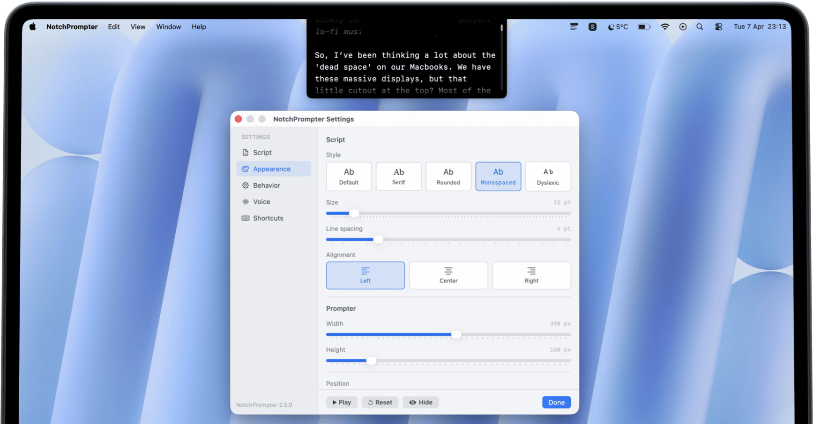

Your teleprompter,
hidden in the notch
Free macOS promtper app that sits in your notch area completely invisible to screen recording and screen sharing.

macOS Sonoma+ · Apple Silicon & Intel · Free & open-source

Features
Invisible to recording
Won't show up in screen recordings, Zoom, Meet, or any screen sharing tool.
Voice activation
Scrolls when you speak, pauses when you stop. Hands-free operation.
Fully customizable
Adjust speed, text size, and font to match your reading pace.
Multiple screens
Works with multi-monitor setups. Place your prompter on any display.
Dark & light themes
Matches your macOS system appearance automatically.
Open-source & free
100% free, forever. MIT licensed. Fork it or contribute.
Dyslexia-friendly font
Built-in OpenDyslexic font for easier reading. Switch anytime in settings.
Custom & floating position
Place the prompter in the notch, a corner, or as a floating window anywhere on screen.
Keyboard shortcuts
Start, stop, and control scrolling with global keyboard shortcuts.

Made by
Jakub Pomykała
I built NotchPrompter because I kept forgetting what to say during recordings. Existing prompter apps required an iPhone or iPad setup that felt too tedious. So I made a native Mac solution that sits right in the notch (or anywhere on your screen) simple, invisible, and free.
FAQ
Is NotchPrompter free?
Does it show up in screen recordings?
What macOS version do I need?
Does it work with external monitors?
Do I need a MacBook with a notch?
Can I place the prompter anywhere on screen?
How does voice-activated scrolling work?
Ready to try it?
Download NotchPrompter, it's free, forever.
You can support project development by purchasing the App Store version
and get free and automated updates.